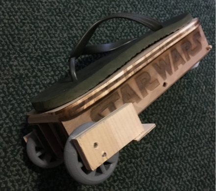
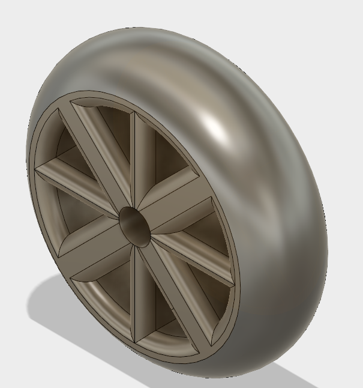
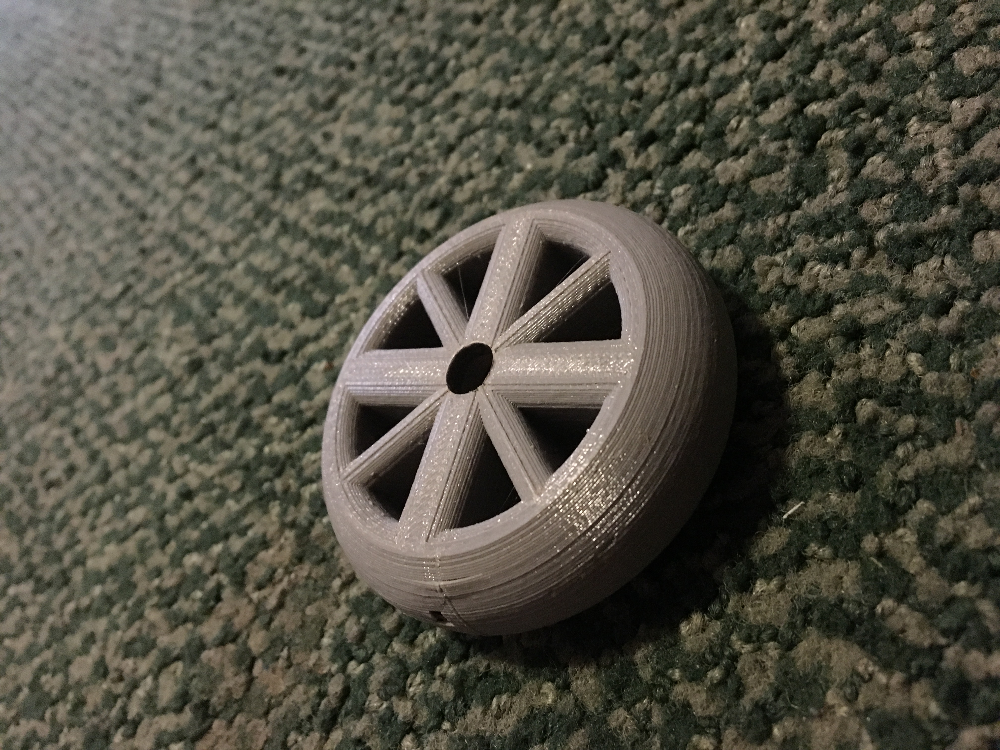
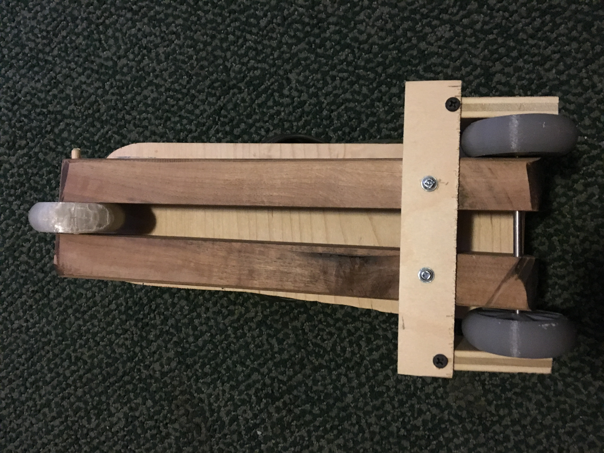

For my final project I constructed a wooden roller skate with a wooden roller plate, 3D printed wheels, and a flip-flop for the shoe base.
The four main components of my project included a wooden base, three 3D printed wheels, two metal axles, and one rubber flip-flop.
I spent a long time designing the .8 inch wide wheel and a 10 inch 3D printed wheel base, however it was too large for the Makerbot printer so I decided to build a wooden wheel base and screw in rubber flip-flop to the base.
To decorate the side of the wheel base I rastored STAR WARS into the side of the wood.

The most important lession I learned from this project is that planning is key. My 3D printed Base was far betting in design and precision of the dimensions. However I could not use it as a result of its size.
First, I designed a 2 and 1/2 tall, .8 inch wide 3D printed wheel in Fusion 360 and printed three using the Makerbot priter.


Second, I designed a wooden base with 1/2 inch thick wood that was 10" by 4". I then cut out two 10" long, 1 and 1/2 inch by 2" wide pieces of wood to act as the wheel supports. I then placed them .9 inches apart allowing for room for the wheel. I then drilled two holes throught the front and back of the wooden base to serve as an axle

Third, I put my metal axle through the front of the skate, got a 1/4 inch thick piece of wood and cut it 5" by 1" and placed it slightly behind the axle under the wooden base. I then got two 1/2 inch wooden piece and cut them 2" by 1". I then drilled a 1/4" hole in both the fit the axle. I then screwed the drilled pieces of wood to the one flat connecting piece.
Lastly, I screwed a rubber flip-flop onto the top of the wooden base and sanded the base to fit the size of the sandal better.
.JPG)
This is the .stl file for the wheel, to build the base just follow my instructions above and use the pictures as a guide. In additon, here is the base that I originally planned on constructing the skate with.